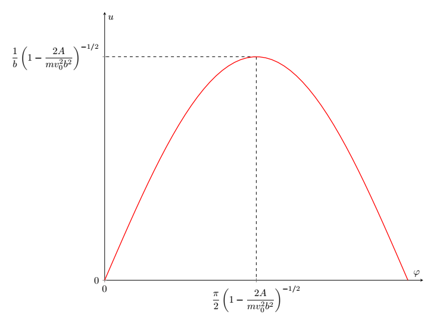
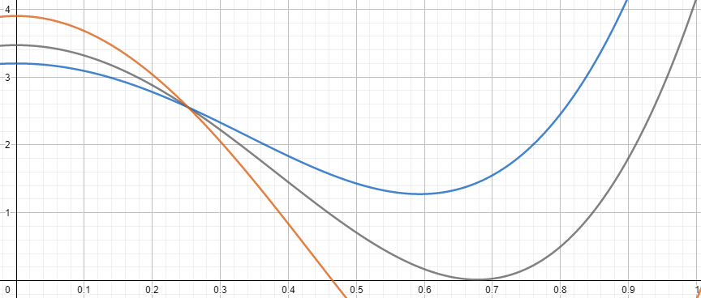

X23 (2023) — English translation
The electric field inside the ball is zero, and outside the ball it is the sum of the external field and the dipole field: $$\vec{E}=\vec{E}_0+\cfrac{1}{4\pi\epsilon_0}\left(\cfrac{3\left(\vec{p}\cdot{\vec{r}}\right)\vec{r}}{r^5}-\cfrac{\vec{p}}{r^3}\right) $$ On the surface of the ball, the electric field is directed perpendicular to the surface. From here:
By definition, a dipole is two point charges $+q$ and $-q$ located at a distance $l$ from each other. Let $\vec{r}$ be the radius vector of the negative charge, and $\vec{l}$ be the radius vector of the positive charge relative to the negative one. Then for the interaction force we have: $$\vec{F}=q\left(\vec{E}(\vec{r}+\vec{l})-\vec{E}(\vec{r})\right) $$ If electric field направлено вдоль дипольного momentа системы, то, since диполь ориентирован вдоль оси $z$, force, действующая нnotго, направлена вдоль оси $z$. If диполь можно считать точечным $$E_z(\vec{r}+\vec{l})-E_z(\vec{r})=\cfrac{dE_z}{dz}\cdot{l} $$ Hence for силы we get: $$F_z=p_z\cfrac{dE_z}{dz} $$ В нашей задаче since $kR\ll{E_0}$ - модель электрического диполя хорошо описывает electric field ball/sphereа. Substituting expression for $p_z$ and $\cfrac{dE_z}{dz}$, we find:
From Gauss's theorem we have: $$2\pi rLE_\text{п}=\cfrac{q}{\epsilon_0}=\cfrac{\lambda L}{\epsilon_0} $$ whence:
At $r\gg{R}$ the values $E$ and $\cfrac{dE}{dr}$ of the wire fields on the ball size scale can be considered constant. In this approximation, the dipole moment of the ball is equal to: $$p=\cfrac{2\lambda R^3}{r} $$ Force, действующая на ball/sphere, equals: $$F_r=p\cfrac{dE_r}{dx} $$ whence:
For potential energy we have: $$W_p=-\int\limits_r^{\infty}Fdr $$ Integrating, we find: $$W_p=-\cfrac{\lambda^2R^3}{2\pi\epsilon_0r^2} $$ Hence parameter $A$ is equal to:
From the law of conservation of energy we have: $$\cfrac{mv^2}{2}-\cfrac{A}{r^2}=\cfrac{mv^2_0}{2} $$ Let us represent квадрат скорости в следующем виде: $$v^2=\dot{r}^2+r^2\dot{\varphi}^2 $$ From the law сохранения angular momentum we get: $$L=mr^2\dot{\varphi}\Rightarrow{\dot{\varphi}=\cfrac{v_0b}{r^2}} $$ Комбинируя с законом сохранения энергии, we get: $$\cfrac{m\dot{r}^2}{2}+\cfrac{mv^2_0b^2}{2r^2}-\cfrac{A}{r^2}=\cfrac{mv^2_0}{2} $$ Минимальное distance до проwater достигается for/at $\dot{r}=0$. From here we get:
The radical expression must be non-negative. From here we get:
Explicitly differentiate $u$: $$u'=\cfrac{du}{d\varphi}=-\cfrac{1}{r^2}\cfrac{dr}{d\varphi} $$ Let us represent $\cfrac{dr}{d\varphi}$ как производную сложной функции: $$\cfrac{dr}{d\varphi}=\cfrac{\dot{r}}{\dot{\varphi}} $$ from where:
The value is constant and equal to: $$r^2\dot{\varphi}=\cfrac{L}{m}=v_0b $$ At the initial moment, the speed is directed directly towards the wire. Then we find:
The expression for the mechanical energy of the ball is as follows: $$E=\cfrac{m\dot{r}^2}{2}+\cfrac{mr^2\dot{\varphi}^2}{2}-\cfrac{A}{r^2} $$ From angular momentum conservation we have: $$L=mr^2\dot{\varphi}=mv_0b $$ hence: $$E=\cfrac{m\dot{r}^2}{2}+\cfrac{mv^2_0b^2}{2r^2}-\cfrac{A}{r^2} $$ Переходя к переменным $u$ and $u'$, we obtain:
Differentiating the expression for energy with respect to $\varphi$, we obtain the equation of harmonic vibrations: $$u''=-u\left(1-\cfrac{2A}{mv^2_0b^2}\right) $$ с циклической частотой: $$\omega_0=\sqrt{1-\cfrac{2A}{mv^2_0b^2}} $$ Общее solution let us write в виде: $$u(\varphi)=C\sin\left(\omega_0\varphi+\varphi_1\right) $$ Taking into account начальных условий: $$u(0)=0\quad u'(0)=\cfrac{1}{b} $$ We find:
The value $u$, starting from zero, reaches a maximum, and then, reaching zero, remains constant in time. The graph is shown in the figure below:

When the direction of the ball's speed is reversed, the total change in angle $\varphi$ is $2\pi$. From here we find the value $\omega_0$: $$\omega_0=\cfrac{1}{2} $$ Then parameter $A$ equals: $$A=\cfrac{3mv^2_1b^2}{8} $$ For/Atравнивая с expressionм, поrayенным в partе $\textbf{A4}$ $$\cfrac{\lambda^2R^3}{2\pi\epsilon_0}=\cfrac{3mv^2_1b^2}{8} $$ we find:
Let us introduce a coordinate system at the center of a cylindrical sphere with the axis $z$ directed along the line connecting the center of the sphere with the charge $q_1$. The potential of charges $q_1$ and $-q_2$ at any point on the surface of the ball is equal to zero, therefore: $$\cfrac{q_1}{\sqrt{r^2+(x-L)^2}}=\cfrac{q_2}{\sqrt{r^2+(x-S)^2}} $$ or: $$(q^2_1-q^2_2)(r^2+x^2)+2x(q^2_2L-q^2_1S)+q^2_1S^2-q^2_2L^2=0 $$ Since $r^2+x^2=R^2$, coefficient for/at $x$ equals нулю. Then we get систему уравнений: $$\cfrac{L}{S}=\cfrac{q^2_1}{q^2_2}\qquad (q^2_1-q^2_2)R^2=q^2_2L^2-q^2_1S^2 $$ solving which, we find:
For $dq_1$ we have: $$dq_1=\lambda rd\tan{\alpha} $$ or:
The element in question is located at a distance $L=\cfrac{r}{\cos\alpha}$ from the center of the ball. From here we find $dq_2$ and $S$:
For $r_{-}$ we have: $$r_{-}=r-S\cos\alpha $$ or
The pair of image charges are attracted to the wire because the negative charge is at a smaller distance from the wire. For the force of attraction, taking into account the electric field of the wire, we have: $$dF=\cfrac{\lambda dq_2}{2\pi\epsilon_0}\left(\cfrac{1}{r_{-}}-\cfrac{1}{r}\right) $$ or:
To find the total force, we calculate the integral of the expression obtained in point $\textbf{D3}$ in the range from $-\cfrac{\pi}{2}$ to $\cfrac{\pi}{2}$. Let's introduce the value $t$, equal to: $$t=\cfrac{R\sin\alpha}{\sqrt{r^2-R^2}} $$ Then we get: $$F=\cfrac{\lambda^2R^2}{2\pi\epsilon_0r\sqrt{r^2-R^2}}\int\limits_{-\frac{R}{\sqrt{r^2-R^2}}}^{\frac{R}{\sqrt{r^2-R^2}}}\cfrac{dt}{1+t^2}=\cfrac{\lambda^2}{\pi\epsilon_0}\cfrac{R}{r}\cfrac{R}{\sqrt{r^2-R^2}}\arctan\cfrac{R}{\sqrt{r^2-R^2}} $$ Taking into account relation $r$, $R$ and $\theta$, we find:
Considering that the ball is attracted to the wire, the expression for potential energy is: $$W_p=-\int\limits_r^{\infty}F(r)dr $$ Let us find quantity $dr$ в переменных $R$ and $\theta$: $$dr=d\left(\cfrac{R}{\sin\theta}\right)=-\cfrac{R\cos\theta d\theta}{\sin^2\theta} $$ Then we have: $$W_p=-\cfrac{\lambda^2R}{\pi\epsilon_0}\int\limits_0^{\theta}\theta d\theta $$ from where:
At the moment of contact between the ball and the wire $\theta=\cfrac{\pi}{2}$. Let's write down the law of conservation of energy: $$\cfrac{mv^2_0}{2}=\cfrac{\lambda^2R}{2\pi\epsilon_0}\left(\cfrac{\pi}{2}\right)^2 $$ from where:
From the law of conservation of energy we have: $$\cfrac{mv^2}{2}-\cfrac{\lambda^2R\theta^2}{2\pi\epsilon_0}=\cfrac{mv^2_0}{2} $$ Let us represent velocity в следующем виде: $$v^2=\dot{r}^2+r^2\dot{\varphi}^2 $$ Taking into account закона сохранения momentа momentumа $$L=mv_0b=mr^2\dot{\varphi} $$ we find:
Depending on the value of $v_0$, functions are divided into three types: 1) intersecting the ordinate axis at $\theta<\cfrac{\pi}{2}$; 2) ordinates that do not intersect the axis; 3) touching the ordinate axis at $\theta<\cfrac{\pi}{2}$.

At sufficiently high speeds (type 1 function), the graph intersects the ordinate axis. At the moment of intersection, the value of $\dot{r}$ is reversed because $\dot{r}^2>0$. At sufficiently low speeds (type 2 function), the value of $\dot{r}^2$ is positive at the extremum, so the ball falls on the wire. The function of the 3rd type is a boundary case of those considered above - at the extremum, the value of the function $\dot{r}^2$ becomes zero. At any speed, the ball will not touch the wire. From here it is clear that when the value $\dot{r}^2$ is equal to zero, the derivative $\cfrac{d\dot{r}^2}{d\varphi}$ must also be equal to zero, which is written in the form of a system as follows:
From the equation for the zero derivative we find: $$v_0=\lambda\sqrt{\cfrac{R}{\pi\epsilon_0m}}\cdot{\cfrac{R}{b}\sqrt{\cfrac{2\theta_{max}}{\sin2\theta_{max}}}} $$ For нахождения $v_0$ необходимо оlimitandть $\theta_{max}$. Разделив уравнения друг на друга, we get: $$\cfrac{k^2\sin^2\theta_{max}-1}{k^2\sin2\theta_{max}}=\cfrac{\theta_{max}}{2}\quad k=\cfrac{b}{R} $$ Solving the equation на калькуляторе, we find: $$\theta_{max1}=0{,}296~\text{rad}\quad\theta_{max2}=0{,}793~\text{rad}\quad\theta_{max3}=1{,}459~\text{rad} $$ from where: